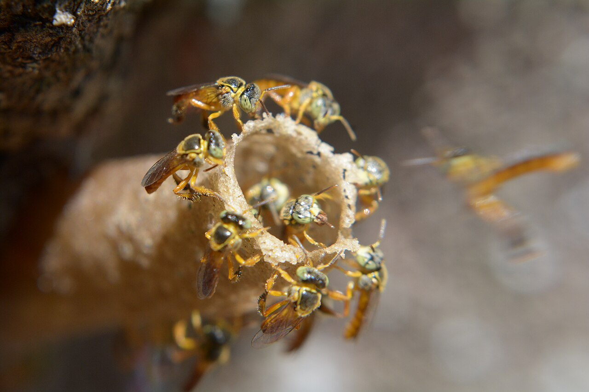

Como criar abelhas sem ferrão na prática

As abelhas sem ferrão são fundamentais para a agricultura e para o equilíbrio ambiental, pois são responsáveis pela polinização de grande parte das plantas com flores.
Para iniciar a criação, o produtor utiliza caixas racionais, que são estruturas desenvolvidas para abrigar colônias de forma organizada e segura.
Dentro dessas caixas, as abelhas constroem sua colônia naturalmente, organizando espaços para cria, alimento e descanso.
No Paraná, espécies como jataí, mandaçaia e uruçu são muito utilizadas, pois se adaptam bem ao clima da Mata Atlântica e a sistemas agrícolas.
Essas caixas devem ser instaladas em locais com sombra, boa ventilação e proteção contra chuva e ventos fortes. O controle de temperatura é essencial para o desenvolvimento da colônia.
Outro ponto importante é o ambiente ao redor. As abelhas precisam de flores durante todo o ano, além de água limpa e ausência de venenos agrícolas.
Com esses cuidados, as colônias se fortalecem naturalmente, podendo até se multiplicar, gerando mais produção de mel e aumentando a polinização das lavouras.
De acordo com o Manual de Manejo de Meliponários da Embrapa (2023), recomenda‑se monitorar a temperatura interna das caixas e aplicar suplementos de proteína de soja para melhorar a saúde das colônias durante períodos de escassez de recursos. (Fonte: EMBRAPA, 2023)